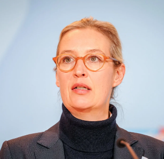

Frauke Brosius-Gersdorf & Alice Weidel
Diese Untersuchung analysiert zwei der kontroversesten politischen Figuren Deutschlands im Jahr 2025: Frauke Brosius-Gersdorf (SPD-Kandidatin für das Bundesverfassungsgericht) und Alice Weidel (AfD-Kanzlerkandidatin). Beide Frauen repräsentieren entgegengesetzte Enden des politischen Spektrums - doch ihre mediale Inszenierung und die Kampagnen gegen sie zeigen bemerkenswerte Parallelen.
Verfassungsrichterin (Kandidatin)
Stefan Weber wirft Ghostwriting vor (91 Textstellen). Dissertation steht in Verdacht, von Ehemann mitgeschrieben.
Beatrix von Storch führt Kampagne wegen Abtreibungspositionen. "Hardcore-Abtreibungsbefürworterin"
Zieht Kandidatur zurück nach Kampagne. SPD und 300+ Juristen verteidigten sie.

AfD-Kanzlerkandidatin
Mit Elon Musk: "Hitler war ein Kommunist". Historiker widersprechen. Gauland und Chrupalla distanzieren sich.
~900.000 € illegale Schweizer Spenden. AfD zu Strafen verurteilt. Weidel widerspricht sich (Partei vs. persönlich).
Rüge durch Bundestagspräsident Schäuble. "Generationenersatz"-Theorie zitiert.
Alice Weidel offiziell als Kandidatin für Bundestagswahl 2025 nominiert.
Weidel und Musk diskutieren 75 Minuten. Hitler-Äußerung sorgt für internationale Empörung.
Weidel bricht Interview ab nach Fragen zu Wohnsitz in der Schweiz.
Frauke Brosius-Gersdorf als Kandidatin für Bundesverfassungsgericht nominiert.
AfD (Beatrix von Storch), Abtreibungsgegner und Stefan Weber starten Kampagne. Plagiatsvorwürfe.
CDU-Politikerin kritisiert Brosius-Gersdorf - aber eigene Dissertation unter Plagiatsverdacht.
Kandidatur zurückgezogen. SPD-Chefin Bas: "Rechte Netzwerke haben gewonnen."
Die mediale Gegenüberstellung von Brosius-Gersdorf und Weidel wirft kritische Fragen auf. Beide Frauen wurden 2025 zu Symbolfiguren einer polarisierten politischen Auseinandersetzung.
Brosius-Gersdorf wurde als "liberale Alternative" zu Weidel positioniert - ob beabsichtigt oder nicht.
Beide Kampagnen (gegen Brosius-Gersdorf und die von Weidel) folgten ähnlichen Mustern: Skandal über Substanz.
Die AfD profitierte von der Brosius-Gersdorf-Kampagne durch Wählermobilisierung.